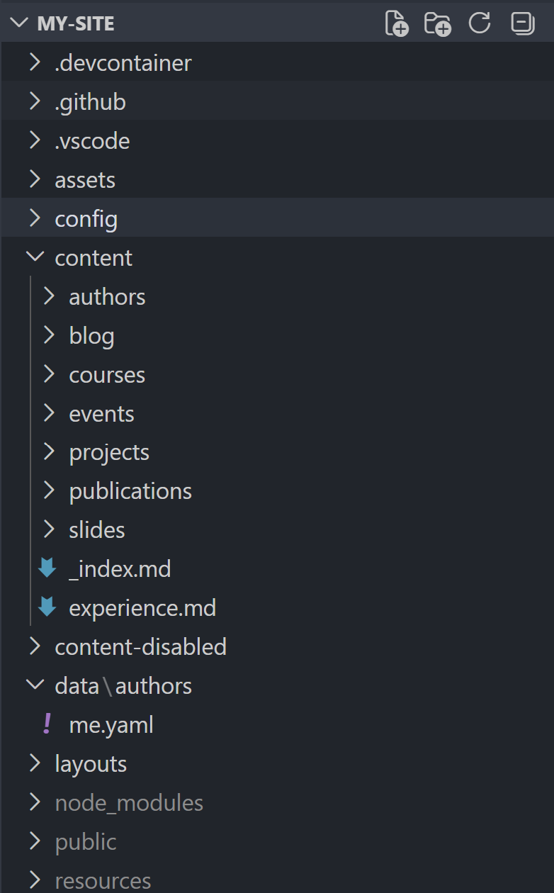
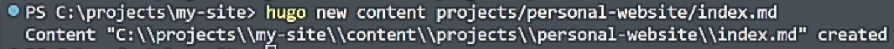
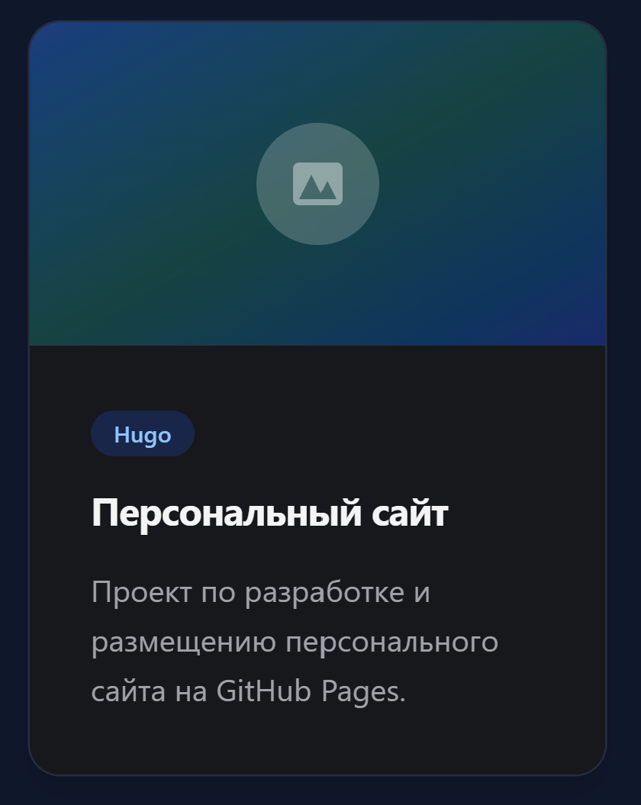
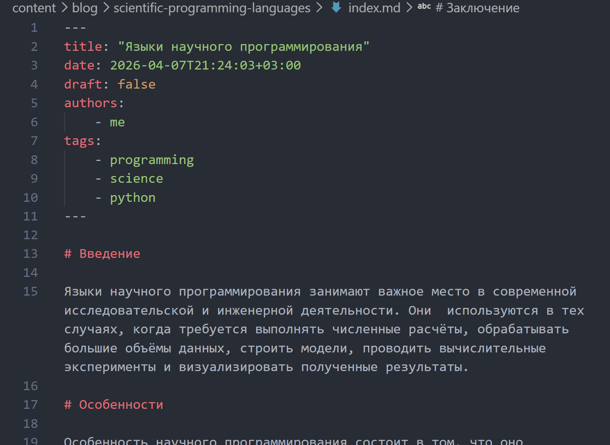
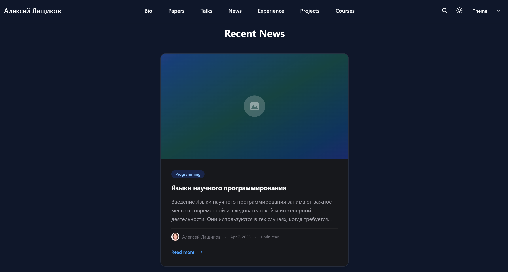
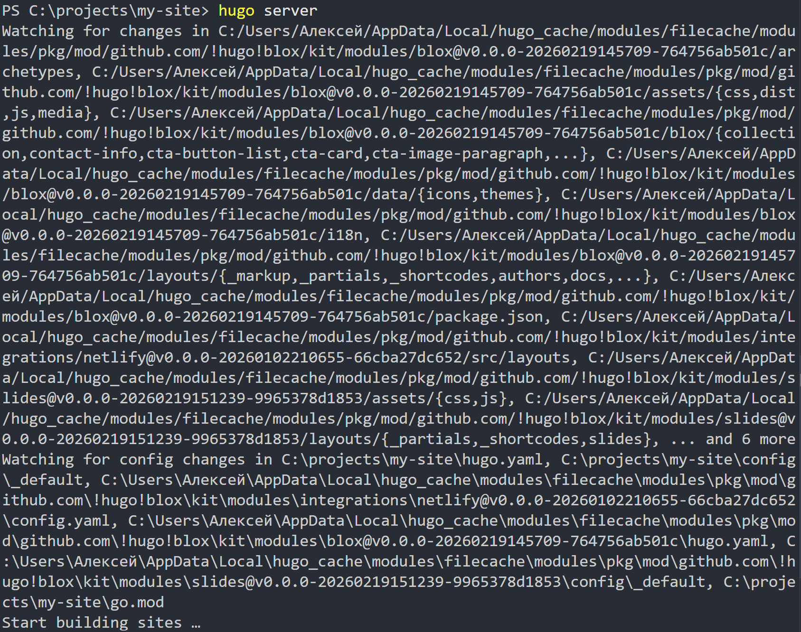
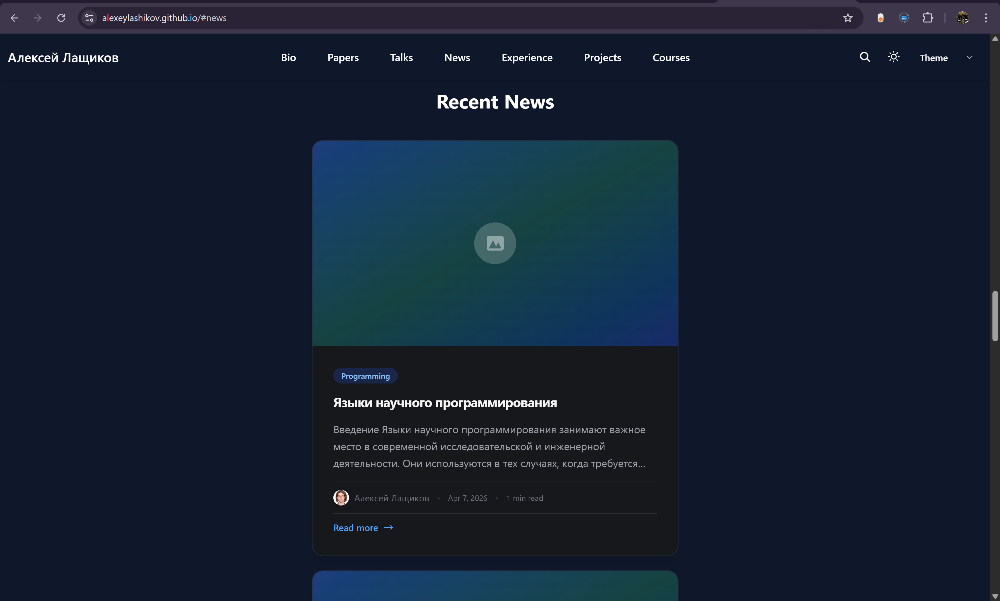

Цель: дополнить персональный сайт оставшимися элементами: записями о проектах и новыми новостными публикациями.
Задачи:
создать записи для персональных проектов;
добавить пост по прошедшей неделе;
добавить пост на тему по выбору;
подготовить публикацию на тему «Языки научного программирования»;
проверить отображение нового контента на сайте.
Теоретическая основа
Персональный сайт создан на базе генератора статических сайтов Hugo и шаблона HugoBlox.
Контент сайта может включать:
основные данные о владельце;
новостные записи;
отдельные страницы проектов.
Каждый материал обычно оформляется как отдельный Markdown-файл с front matter.
Контентные страницы в Hugo
В Hugo проекты и новостные записи создаются как отдельные страницы.
Для них указываются:
заголовок;
дата;
краткое описание;
автор;
теги;
основной текст;
параметр draft.
После сохранения такие материалы автоматически подключаются к структуре сайта и отображаются в соответствующих разделах.
Структура проекта сайта
Сначала была изучена структура проекта персонального сайта и определены каталоги, отвечающие за размещение материалов о проектах и новостных записей (Рисунок 1).

Рис. 1: Структура проекта персонального сайта
Папка с контентом сайта
После этого была открыта папка content, чтобы определить место размещения записей о проектах и новостных публикаций.
Это позволило понять, где должны создаваться новые материалы сайта (Рисунок 2).
Рис. 2: Папка content и структура размещения материалов
Создание записи для проекта
Для добавления первого персонального проекта был использован генератор страниц Hugo:
hugo new content project/personal-website/index.md
После этого был создан файл проекта с нужной структурой (Рисунок 3).

Рис. 3: Создание записи для персонального проекта
Редактирование страницы проекта
В созданном файле были указаны заголовок, дата, краткое описание, автор, теги и основной текст проекта.
Таким образом была подготовлена отдельная страница, посвящённая персональному проекту (Рисунок 4).
Рис. 4: Редактирование файла проекта
Добавленные проекты в структуре сайта
После создания страниц было проверено, что записи проектов появились в структуре сайта и корректно размещены в каталоге проектов (Рисунок 5).
Рис. 5: Записи персональных проектов в структуре сайта
Проверка отображения проектов
Далее была открыта локальная версия сайта, чтобы убедиться, что страницы проектов доступны и корректно отображаются на сайте (Рисунок 6).

Рис. 6: Отображение раздела с проектами на сайте
Создание поста по прошедшей неделе
Следующим этапом была создана новая новостная запись по прошедшей неделе.
Для этого использовалась команда:
hugo new content blog/week-summary-4/index.md
После этого был создан и заполнен файл записи (Рисунок 7).
Рис. 7: Создание новостной записи по прошедшей неделе
Редактирование weekly post
В созданной записи были указаны заголовок, дата, описание, автор и основной текст.
Для публикации также был установлен параметр:
draft:false
Рис. 8: Редактирование записи по прошедшей неделе
Проверка weekly post на сайте
После сохранения изменений была проверена главная страница сайта.
Новая запись по прошедшей неделе успешно появилась в разделе новостей (Рисунок 9).
Рис. 9: Отображение поста по прошедшей неделе на сайте
Создание поста о языках научного программирования
В качестве темы по выбору были выбраны языки научного программирования.
Для этого была создана новая страница блога командой:
hugo new content blog/scientific-programming-languages/index.md
Рис. 10: Создание тематической записи
Заполнение тематической записи
После создания файла была подготовлена и заполнена запись, посвящённая языкам научного программирования, их назначению, применению в вычислениях и анализе данных, а также примерам таких языков (Рисунок 11).

Рис. 11: Редактирование записи о языках научного программирования
Результат на главной странице
После обновления локального сайта было проверено, что в разделе новостей отображаются обе новые публикации:
пост по прошедшей неделе;
пост о языках научного программирования.

Рис. 12: Отображение новых записей на главной странице сайта
Итоговая локальная проверка
После завершения редактирования всех файлов был запущен локальный сервер Hugo для итоговой проверки конфигурации сайта и отображения нового контента (Рисунок 13).

Рис. 13: Запуск локального сервера Hugo
Публикация изменений в GitHub
После этого изменения были добавлены в git, зафиксированы коммитом и отправлены в удалённый репозиторий GitHub (Рисунок 14).
Рис. 14: Коммит и публикация изменений в GitHub
Проверка опубликованного сайта
На заключительном этапе была открыта опубликованная версия сайта.
Проверка показала, что записи о проектах и новые новостные публикации стали доступны в онлайн-версии сайта (Рисунок 15).

Рис. 15: Опубликованная версия сайта после выполнения пятого этапа
Выводы
Создал записи для персональных проектов.
Добавил пост по прошедшей неделе.
Создал тематический пост о языках научного программирования.
Проверил отображение нового контента на локальной версии сайта.
Опубликовал изменения в GitHub и проверил итоговый результат.
В результате персональный сайт был дополнен оставшимися элементами и стал более полным и информативным.